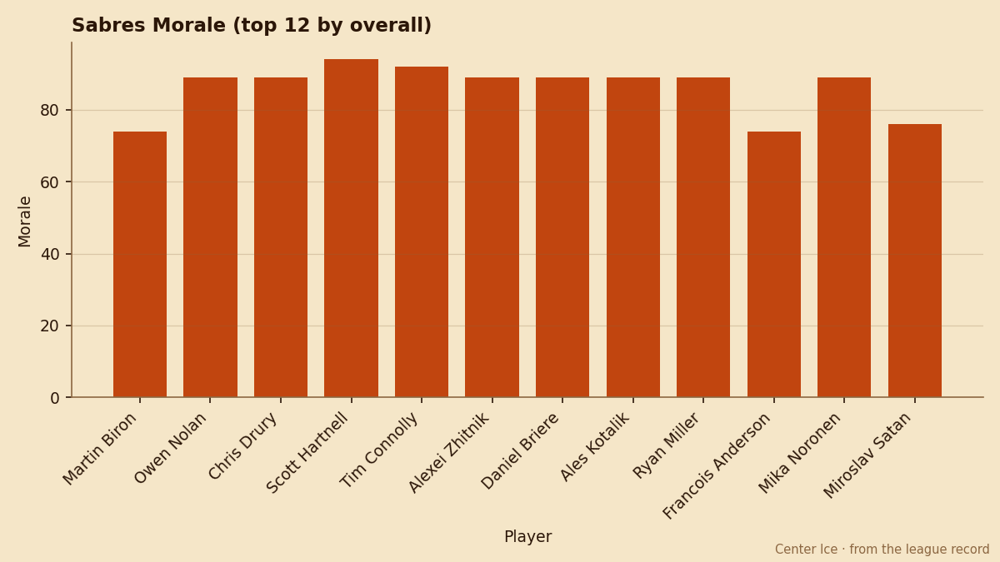
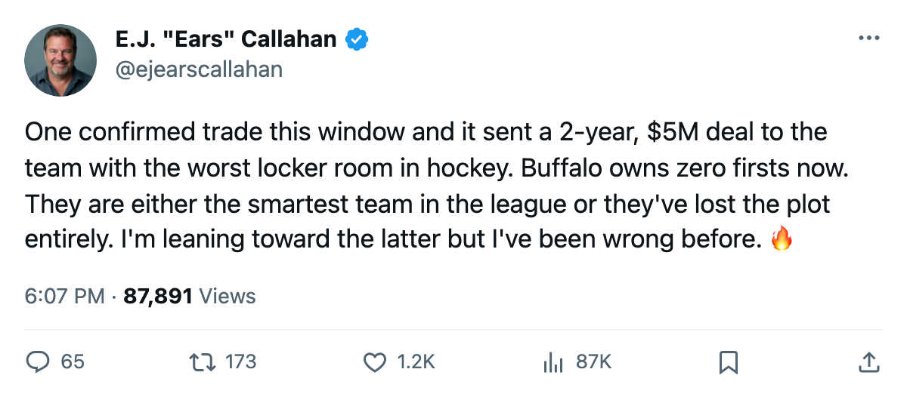
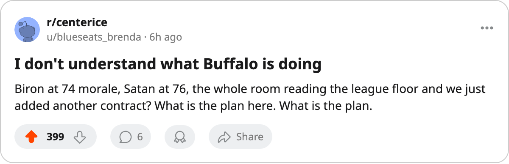

The Window's Only CONFIRMED Trade Sent $5.10M to a Team With 18 Points and No First-Round Pick. Here's the Ledger.
Buffalo took a 2-year deal for a top-pair defenseman while the league's worst room gets worse and the draft board gets emptier.
 E.J. "Ears" CallahanInsider · The Hot Stove
E.J. "Ears" CallahanInsider · The Hot Stove

The theory that Buffalo flips Ozolinsh before the deadline
Buffalo traded Dan Bylsma to Nashville for Sandis Ozolinsh and Scott Hartnell on November 25, and four picks moved between the two clubs through November 30. The league record carries this at news confidence, which means it is CONFIRMED. Nobody else filed a trade this window that cleared that bar.

Ozolinsh sits 87 in the Bureau's Book, carries $5.10M a year with 2 seasons left, and has 1 goal, 14 assists, 15 points in 21 games. He is a real defenseman going to a club that has 5 wins in 21 games. Hartnell is 79, earns $1.10M, and his contract expires in July. He has 8 points in 21 games since the swap.
The pick ledger is where this gets uncomfortable for Buffalo. The desk's tracker shows Nashville now holds Buffalo's 1st and 4th rounders. Buffalo holds Nashville's 4th. That leaves  Buffalo Sabres with 5 picks across all rounds and zero firsts. They are the only club in the league holding no first-round selection.
Buffalo Sabres with 5 picks across all rounds and zero firsts. They are the only club in the league holding no first-round selection.
The morale floor is the real problem
Buffalo Sabres reads 87.0 on the Bureau's club average, tied with  Columbus Blue Jackets for the worst number in the league.
Columbus Blue Jackets for the worst number in the league.  Martin Biron83 is at 74 on $8.78M with 5 years left.
Martin Biron83 is at 74 on $8.78M with 5 years left.  Miroslav Satan73 sits at 76 on a contract that expires in July, earning $3.21M and playing 11.3 minutes a night. Francois Anderson74 is at 74 too.
Miroslav Satan73 sits at 76 on a contract that expires in July, earning $3.21M and playing 11.3 minutes a night. Francois Anderson74 is at 74 too.
The room is broken and the front office just added payroll. Buffalo's per-point sits at $3.20M before this trade takes effect. They were the 3rd-worst value in the league. They just took on $5.10M for a 33-year-old defenseman with 2 years of term left, on a team that has 18 points and sits 4th in the Northeast.
 Nashville Predators gave up a top-pairing defenseman and a depth forward for a 62-overall right wing and draft capital. Nashville is 10-5-2, 30 points, 2nd in the Central. They already hold 5 picks including 2 firsts. They are building a war chest while still in a playoff spot, and they just made it deeper.
Nashville Predators gave up a top-pairing defenseman and a depth forward for a 62-overall right wing and draft capital. Nashville is 10-5-2, 30 points, 2nd in the Central. They already hold 5 picks including 2 firsts. They are building a war chest while still in a playoff spot, and they just made it deeper.
What does Buffalo want? League sources in the Meadowlands describe a front office that sees Ozolinsh as a rental piece they can move again by the trade deadline in 109 days. If that is true, the $5.10M is a bridge loan and the 2 years of contract are someone else's problem. If that is wrong, Buffalo has committed the rest of the season to a team that plays in front of 16,370 people at $78 a ticket and cannot win at home.
The scoreboard says 5-5-0 at the keybank Center. The visitors are 3-8.
CONFIRMED vs. DENIED: The trade is CONFIRMED at news confidence. The theory that Buffalo moves Ozolinsh before the deadline is a league-source read with no transaction to back it. I am rating it 🔥.

